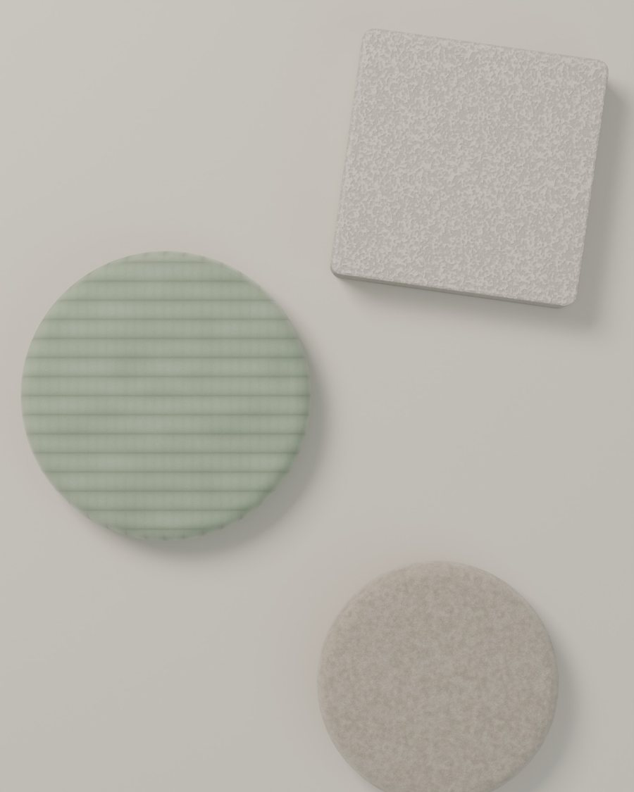

Restoration, quiet and sensory care
Soft, but with presence.



Abstract
What can a surface give the body that a screen cannot? Much of what we touch is slick: glass, gloss, uniform coatings with no texture and no familiar signal. With nothing to read, the perceiver has to imagine what cannot be felt. Lucy Lippard and John Chandler noted in 1968 that work without detail takes longer to see, since the eye is used to reading through detail. Others name the same loss. Jean-François Lyotard called photography programmed by science and capital “too beautiful”; Fredric Jameson saw a world that “threatens to become a glossy skin”; Olafur Eliasson writes that our sense of cold now comes from a thermostat reading, not a chill on the skin. This theme stands for another surface: edgeless from afar, as if limitless, and rich up close, where touch receives many signals at once and value shifts as subtly as diffused light. It needs three things together: a subject far larger than the viewer, such as sky, sea or light; texture the senses can read at close range; and no edge, frame or vantage point. Robert Irwin said it of his discs: “there are no frames in our perception.” James Turrell's light, Hiroshi Sugimoto's seascapes and Uta Barth's blur work the same way. Soft here is the absence of something expected, a grid or a boundary; presence is what arrives once the perceiver relaxes and gives the thing fresh attention. Softness is the result, not the goal. Calm is trend vocabulary now, and its look can be copied without care; the test is whether care for the material shows.
Impact: Direction
Most of the day goes to screens that ask for constant, sharp attention. A material can offer the opposite rhythm: an expectation withheld, a moment of rest, then fresh attention. That is a use, not a decoration: a seat, a wall, a garment or a handle that rewards a second look and a slower touch gives the senses something to rest on. The answer depends on distance. Across a room the surface reads as one calm field, with no hard edges or grid; within reach it holds enough grain and value shift to be read by hand. Light does much of the work. A surface that diffuses light instead of mirroring it lets the room's own light, daylight or a low lamp, become part of the material. Calm sells now. For the people who live with it, the difference between care and copy shows over time: care keeps rewarding attention; a copy runs out.
Overall mood
Edgeless and quiet from afar, many small signals up close. Pale grounds, light that seems to have no source, sheer and felted cloth. Softness is the result of exact, careful making, not the aim.

Definition and test
Edgeless and seamless are the result of having something much greater than us as the subject, a question of scale. A surface with no texture does not produce the noise or the haptics, even when scaled up.
- The test
- "Soft but with presence." Seamless and edgeless surfaces and light that read as limitless from afar and reveal complex, multi-signal haptics (value shifts, grain) up close.
- Three ingredients
- (1) a subject far larger than the viewer; (2) texture or value noise the senses can read at close range; (3) no edge, frame or vantage point. A large flat gloss fails on (2), a small textured thing on (1), a view from a summit on (3).
- Care test
- An asset passes only if the material care or method shows (exactitude, waste avoided, precise handling, detail that rewards a close look). It fails if it only looks soft; when unsure it is tagged T10? with the reason.
Visual themes
Light without a source. Key motifs: a pale disc with no edge, a plane of colored light, a glow through paper. Sub motifs: soft round shadow, value shift instead of hue shift. Images (01), (02), (06).
Edgeless ground. Key motifs: ripples, gravel, an even floor that runs out of the frame. Sub motifs: fine repeated grain, no marks or paths. Images (03), (04).
Cloth that diffuses. Key motifs: sheer, felted and gauze cloth, fold lines. Sub motifs: layered fibers, semi-transparency. Images (05), (07).
Presence up close. Key motifs: surface grain, fiber, seam of a fold. Sub motifs: value shifts that only the eye at close range finds. Images (05), (06), (07).
Hero material
Sheer and felted textiles carry the set: very sheer linen (07, Met, ca. 1491-1473 BCE) and nuno felt, wool over gauze (05, close view). Both diffuse light and show fiber up close.
The material that fits the test is a matte, low-chroma textile with layered fibers and soft light transmission. A finish that is uniform, glossy and screen-like is what T10 argues against.
Visual elements
- Photography
- Even, overcast or diffused light; plain grounds; no horizon line used for a vantage point.
- Type and graphics
- Plain captions in the Style Guide faces; no loud graphics.
- Layout habits
- One idea per image row; large images with low contrast beside close-up detail.
- Detail
- Subtle value shifts, fine grain, a single fold line.
Against (what T10 replaces)
The slick surface with no haptic information and no familiarity, where the perceiver has nothing to read and must invent what it cannot feel: glossy, uniform, screen-like finishes, even enlarged.
- The magisterial gaze
- Summit, panorama and aerial vista (Boime): the possessing view from above. Not used as T10 assets.
- Not T9
- T9 is the trace of wear on the object. Calm is not enough to qualify.
Visual story
Read the board as a change of distance. From afar: a disc, a light, a plane of ground with no edge (01 to 04). Closer: gravel and ripples resolve into grain, a lantern into ribbing, cloth into fiber (05 to 07). The point of the sequence is that the same surface changes what it tells you as you approach.
Core group and notable works
- Core group
- Hiroshi Sugimoto, Uta Barth, Agnes Martin, Olafur Eliasson, James Turrell, Robert Irwin.
- On this board
- Irwin (01), Turrell (02), Sugimoto (04, the Go'o Shrine court), Noguchi's Akari (06) as a supporting design.
- Not yet on a board
- Barth, Martin and Eliasson: no cleared or collected image yet.